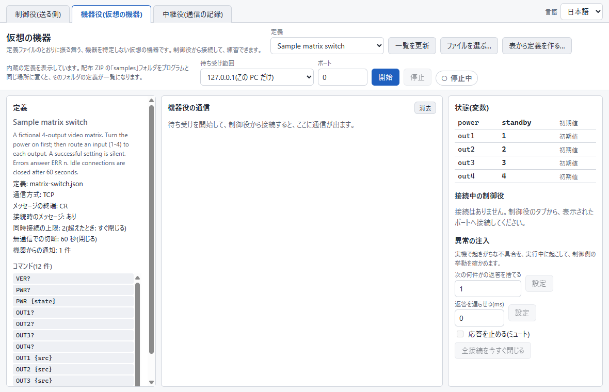
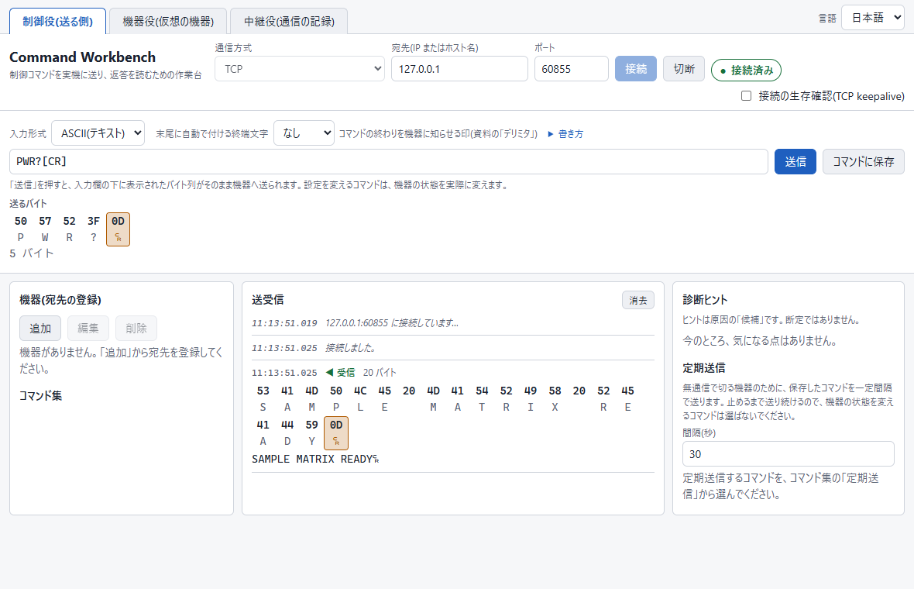
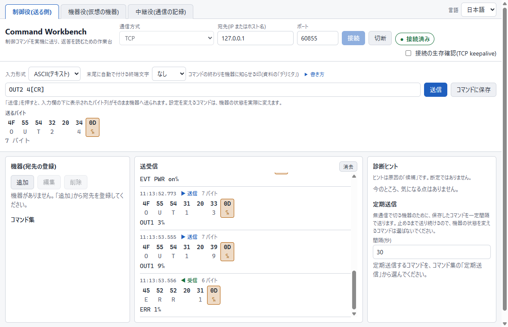
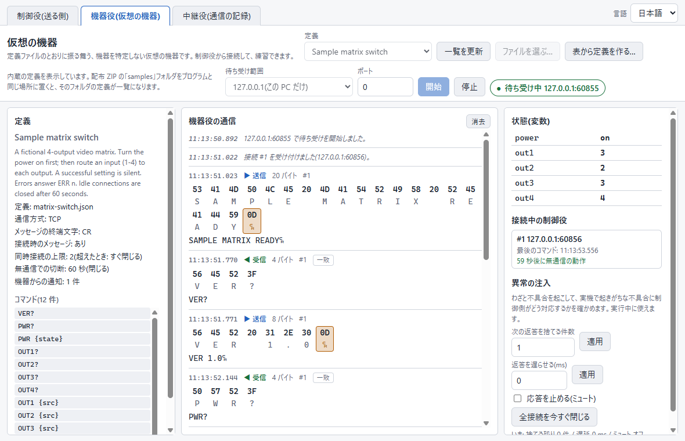
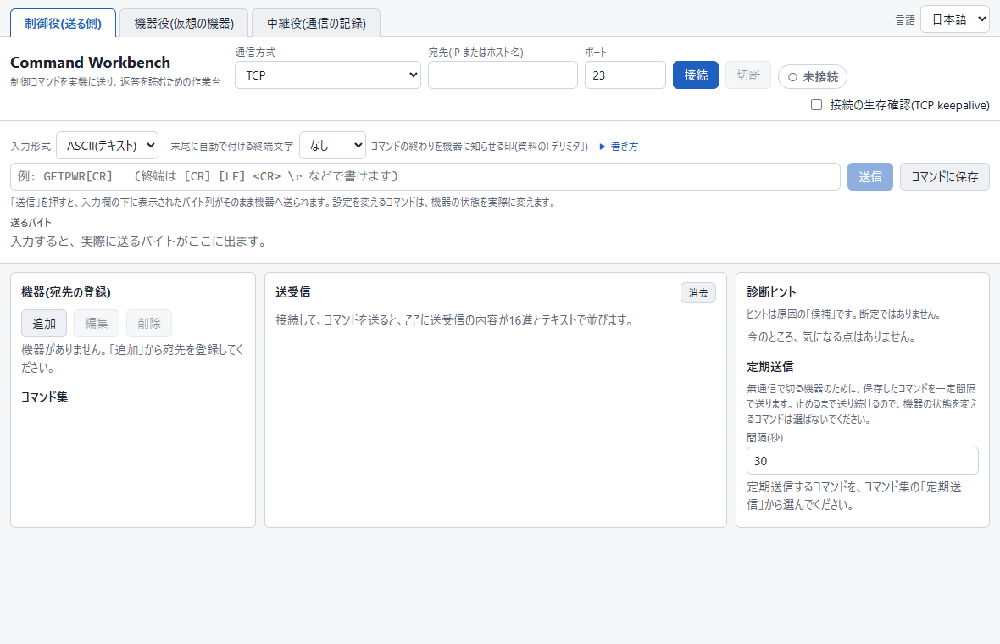
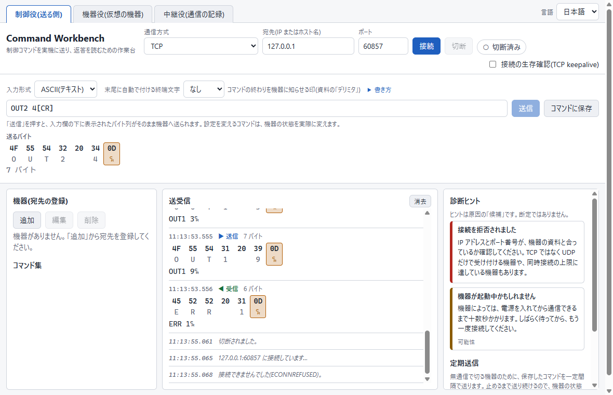
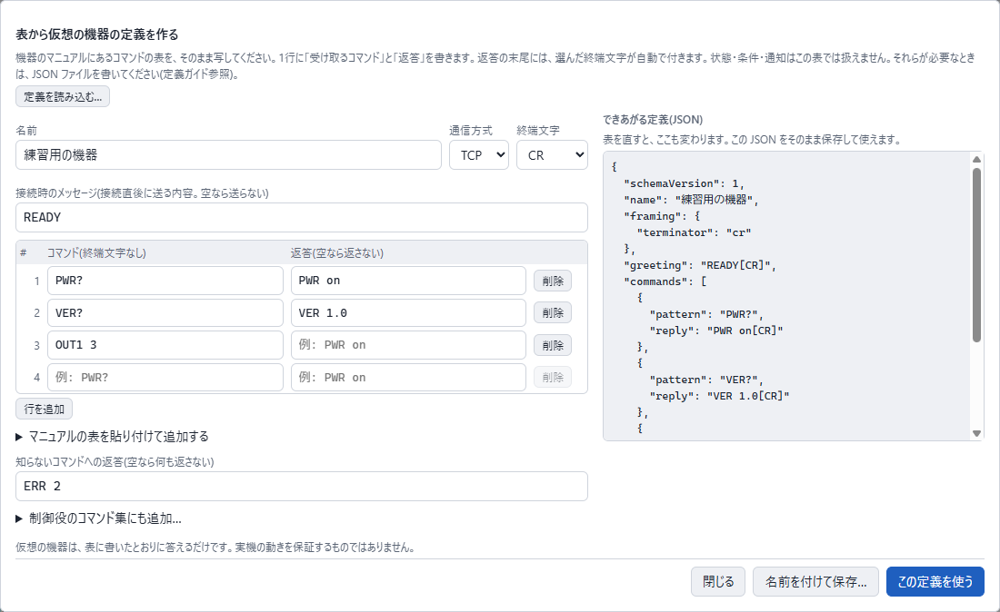
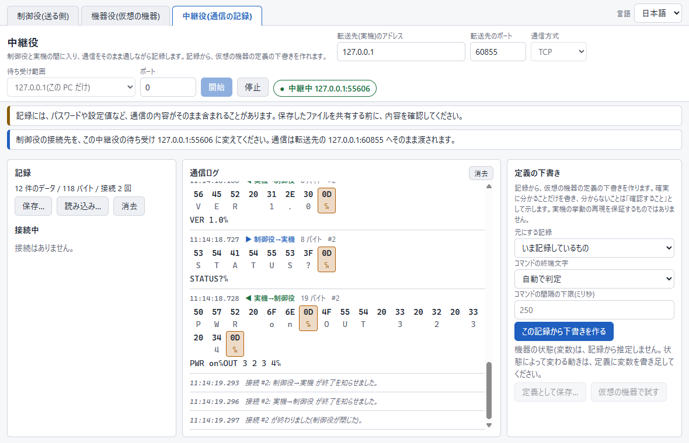
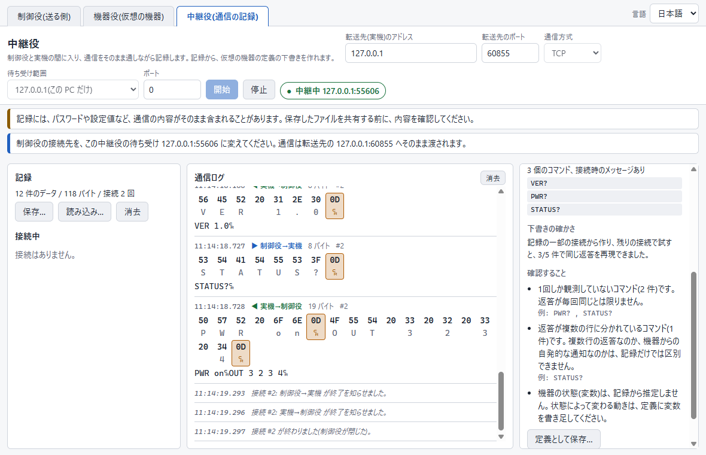
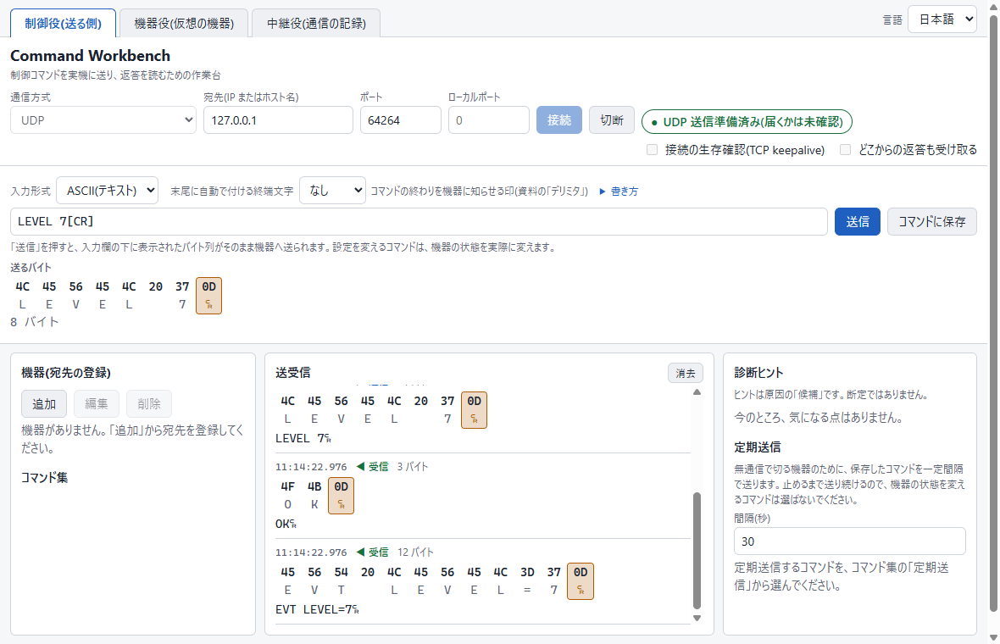

Command Workbench 説明書
制御コマンドを機器へ送り、返答を読むための道具の使い方です。
1. はじめに
何をする道具か
映像・音響・照明などの機器には、ネットワーク(LAN)から文字や数値の「コマンド」を送って操作できるものがあります。たとえば PWR 1[CR] と送ると電源が入る、といった具合です。Command Workbench は、そのコマンドを機器へ送り、機器が返してくる内容を読むための Windows 用ソフトです。
機器の資料は、コマンドを独自の書き方([CR]、<CR><LF>、0x0D など)で説明しています。この書き方を実際に送るバイトに直すところと、機器が応答しない理由を探るところで、つまずく人が多くいます。このソフトは次の3つで、そこを助けます。
- 資料の書き方のまま入力すると、実際に送るバイトが送る前に見えます。
- 送受信の内容を、16進数と文字で並べて表示します。改行にあたる文字(CR・LF)は色と記号で目立たせます。
- 返答がないときなどに、次に確かめることのヒントを出します。
3つの役割(タブ)
画面の上に3つのタブがあります。それぞれが別の役割で、同じプログラムの中で同時に使えます。
| タブ | やること | 使う場面 |
|---|---|---|
| 制御役(送る側) | 機器へコマンドを送り、返答を読みます。 | 実機を操作する・調べる。 |
| 機器役(仮想の機器) | 「定義ファイル」に書いたとおりに、機器のふりをして答えます。 | 実機がなくても練習する。制御側の動きを確かめる。 |
| 中継役(通信の記録) | 制御役と実機の間に入り、やり取りをそのまま通しながら記録します。 | 別のソフトと機器が何を話しているか見る。記録から仮想の機器の下書きを作る。 |
できないこと
- 練習と検証のための道具です。稼働中の本番の機器には使わないでください。試験用の機器か、仮想の機器で使ってください。
- 特定のメーカーや機種を再現するものではありません。仮想の機器は、定義ファイルに書かれたことだけをします。実機の動作の保証にはなりません。
- ログインや認証(チャレンジ・レスポンス)が必要な機器には、まだ対応していません。
- 対応する通信方式は TCP と UDP です。シリアル(RS-232C)や USB は扱えません。
- ブロードキャスト・マルチキャスト(1回の送信で多数の機器へ届く送り方)、IPv6 には対応していません。
起動のしかた
ダウンロードした ZIP を、書き込みができるフォルダ(デスクトップや書類フォルダなど)に展開し、中の Command Workbench-0.2.0-portable.exe を実行します。インストールは要りません。
- 初回の起動は、数秒かかることがあります。
- プログラムにコード署名がないため、Windows やウイルス対策ソフトが警告を出すことがあります。配布元(ダウンロードしたページ)を確かめたうえで、実行するかを判断してください。
- 設定やコマンドの保存ファイルは、プログラムと同じフォルダに作られます。使い終わって消したいときは、フォルダごと削除できます。
2. 最初の5分
実機を使わずに、パソコンの中だけで一通り体験します。仮想の機器(機器役)を作り、そこへ制御役からつなぎます。ネットワークには何も出ません。機器を壊す心配もありません。
-
機器役のタブで、仮想の機器を用意します。「機器役(仮想の機器)」のタブを開き、定義の一覧から Sample matrix switch を選びます(選ぶとすぐ読み込まれます)。待ち受け範囲は 127.0.0.1(この PC だけ)、ポートは
0のままにします。
定義を選んだところ。左に、この仮想の機器が理解するコマンドの一覧(VER?、PWR? など)が出ます。サンプルの説明文は英語のままです。 -
開始を押します。右上のバッジに 待ち受け中 127.0.0.1:番号 と出ます。このポート番号を覚えてください(起動のたびに変わります)。
-
制御役のタブから、そこへつなぎます。「制御役(送る側)」のタブを開き、宛先に
127.0.0.1、ポートに覚えた番号を入れて、接続を押します。バッジが接続済みになり、機器からの接続時のメッセージSAMPLE MATRIX READYが送受信の欄に出ます。 -
コマンドを送ります。入力欄に
VER?[CR]と入力します。入力欄の下の送るバイトに、実際に送られる中身(56 45 52 3F 0D)が出ます。[CR]が0D(改行にあたる制御文字)になっていることを確かめて、送信(または Enter)を押します。
入力すると、送る前に「送るバイト」が見えます。 [CR]は0Dに変わっています。 -
続けて、次の順に送ってみてください。送るたびに、返答(または返答がないこと)を見ます。
送るもの 起きること PWR?[CR]PWR standby(待機中)と返ります。OUT1 3[CR]電源が入っていないので ERR 10(いまは受け付けない)と返ります。PWR 1[CR]電源を入れます。成功したときは何も返らないのが、この仮想の機器の癖です(実機にもよくあります)。代わりに、機器が自分から EVT PWR on(通知)を送ってきます。OUT1 3[CR]今度は成功します。これも無言です。 OUT1?[CR]で確かめるとOUT1 3と返ります。OUT1 9[CR]範囲外(1〜4 以外)なので ERR 1と返ります。
送受信の欄。青が送信、緑が受信です。返答の末尾の記号は、CR を表しています。 -
機器の側も見ます。「機器役」のタブへ戻ると、いま受け付けたコマンドと、機器が返した内容、機器の状態(状態(変数)の表で
powerがon、out1が3)が見えます。
機器役。右の列に、機器の状態と、わざと不具合を起こす操作(異常の注入)があります。 -
わざと壊してみます。機器役の異常の注入で、応答を止める(ミュート)にチェックを入れ、制御役からもう一度
PWR?[CR]を送ります。返答は来ません。3秒ほどで、制御役の右の診断ヒントに「返答がありません」と、確かめることが出ます。実機が黙ってしまったときに何が起きるかを、ここで体験できます。確かめたらチェックを外します。
ここまでで、「入力 → 送るバイトの確認 → 送信 → 返答を読む」という基本の流れは終わりです。実機を使うときは、手順3の宛先を実機の IP アドレスとポートに変えるだけです。ただし実機では、設定を変えるコマンドが機器を実際に変えます。「11. 安全に使うために」を先に読んでください。
3. 画面の見かた
タブと言語
最上段のタブで、制御役・機器役・中継役を切り替えます。右上の言語で、日本語と English を切り替えられます。切り替えても、接続や動作中の内容は変わりません。
制御役の画面

- 接続の欄(最上段)。通信方式(TCP / UDP)、宛先、ポートを入れて、接続・切断を押します。右のバッジが、いまの状態(○ 切断済み、● 接続済みなど)を、色と記号の両方で示します。接続の生存確認(TCP keepalive)のチェックは、定期送信の項で説明します。
- コマンドの入力欄(その下)。入力形式、末尾に自動で付ける終端文字、入力欄、送信、コマンドに保存が並びます。入力欄の下の送るバイトが、実際に送られる中身です。
- 左の列。機器(接続先の登録)と、機器ごとに保存したコマンド集。
- 中央の送受信。送った内容(青)と受け取った内容(緑)が、時刻つきで並びます。上の段が16進数、下の段が文字で、CR・LF などの制御文字は色つきの四角で目立たせます。
- 右の診断ヒント。うまくいかないときの確認項目が出ます。下に定期送信の設定もあります。
状態を示す記号
状態は、色だけでなく記号と文字でも示します(○ 待機、● 動作中、エラーは別の記号)。色の見分けがつきにくくても読めます。
4. コマンドの書き方
機器の資料に載っているコマンドの書き方を、そのまま入力できます。入力した内容が、どのバイトになるかは、入力欄の下に常に表示されます。
| 入力 | 送られるバイト |
|---|---|
[CR] <CR> \r | 0D |
[LF] <LF> \n | 0A |
[CRLF] <CR><LF> | 0D 0A |
[NUL] [STX] [ETX] [ACK] [NAK] [ESC] [SP] [TAB] など | その名前の制御文字(大文字・小文字は区別しません) |
0x0D \x0D | 16進数1バイト(ちょうど2桁) |
\\ \[ \< | その文字そのもの(\ [ <) |
| 上記以外 | 文字として送ります(UTF-8) |
入力形式
- ASCII(テキスト)(既定): 上の表の書き方が使えます。日本語など ASCII にない文字は UTF-8 のバイトで送ります(送れますが、含まれていると、位置を示す警告が出ます。マニュアルからコピーした全角の英数字や空白に気づくためです)。Shift_JIS などを期待する機器には、次の HEX で直接指定してください。
- HEX(16進):
47 45 54 50 57 52 0Dのように、生のバイトを並べて入力します。
16進数を続けて書くときは、0x0D 0x0A のように空白で区切ってください。0x0D0x0A は、読み間違いを防ぐために、わざとエラーにしています。
終端(コマンドの終わりの印)
多くの機器は、CR や LF を「ここでコマンドが終わり」の印として使います。これを終端文字と呼びます。終端がないと、機器は続きを待ち続け、何も返さないことがあります。
- 入力欄に
[CR]を直接書くか、末尾に自動で付ける終端文字で CR・LF・CR+LF を選びます。 - 入力がすでに終端で終わっていて、自動の終端も選んでいると、終端が二重になるので、警告が出ます。
- 書き方を読み取れないときは、推測せずに、位置と理由を示します。
5. 制御役
機器へコマンドを送り、返答を読みます。実機にも、仮想の機器(機器役)にも使えます。
機器を登録する
左の機器の追加を押し、名前・宛先(IP アドレスかホスト名)・ポート・通信方式を入れて保存します。登録すると、一覧から選ぶだけで接続の入力欄が埋まります。登録は、編集・削除でいつでも直せます。IP アドレスとポートは、機器の資料や、機器の設定画面で確かめます。
送る
- 接続を押します。
- 入力欄にコマンドを入れ、送るバイトを確かめます。
- 送信(または Enter)を押します。押した時点で、すぐ送られます。確認の画面は出ません。押す前に、送るバイトを確かめる習慣をつけてください。
送って3秒ほど返答がなければ、ヒントが出ます。成功したときは何も返さないコマンドは、コマンドに保存の画面でこのコマンドは返答がないにチェックを入れて保存してください。保存したコマンドから送るときは、返答がなくてもヒントを出しません。
コマンドを保存して使い回す
コマンドに保存を押し、名前を付けて保存します。保存したコマンドは、左のコマンド集に並び、送信を押すだけで送れます。コマンドは、機器ごとに、プログラムと同じフォルダの workbench-commands.json に保存します。
定期送信(接続を保つ)
機器によっては、一定時間コマンドが来ないと接続を切ります。定期送信は、保存したコマンドを一定間隔で送って、それを防ぐ補助です。コマンド集のコマンドの定期送信を押し、右の欄で間隔(秒)を決めて開始します。止めるまで送り続け、接続が終わると止まります。機器の状態を変えるコマンドは、何度も送られるので、選ぶときに注意してください。
これとは別に、接続の生存確認(TCP keepalive)のチェックがあります。これは OS が「相手が消えていないか」を確かめる仕組みで、機器が「通信があった」と数えるとは限りません。
診断ヒント
接続できない、返答がない、切断された、といったときに、右の診断ヒントへ「次に確かめること」が出ます。ヒントは原因の候補であり、断定ではありません。

6. 機器役
実機のかわりに、定義ファイルに書いたとおりに答える仮想の機器を動かします。次のようなときに使います。
- 実機がなくても、コマンドの送り方や返答の読み方を練習する。
- 実機で出会いがちな癖(成功しても無言、状態によるエラー、一定時間でつながりが切れる、など)に、制御する側がどう見えるかを確かめる。
- 自分で作った制御ソフトの動作確認をする。
使いかた
- 定義の一覧から選びます。同梱のサンプルが並んでいます。ファイルを選ぶ…で、別の場所の定義ファイルも読み込めます。
- 待ち受け範囲とポートを決めて、開始を押します。ポート
0は「空いている番号を自動で選ぶ」です。決まった番号が必要なら、そこに入れます。 - つなぐ側(制御役のタブや、別のソフト)から、表示された
アドレス:ポートへ接続します。
画面の中身
- 左: 定義。読み込んだ定義の名前、説明、設定(同時接続の上限、無通信での切断など)、理解するコマンドの一覧。サンプルの説明文は英語です。
- 中央: 機器役の通信。受け取ったコマンドと、機器が返した内容。コマンドごとに、どう扱われたか(一致など)が付きます。
- 右: 状態と操作。機器の状態(変数)の表、いま接続している相手の一覧、異常の注入。
異常の注入
実機で起きがちな不具合を、動かしている間に、わざと起こせます。制御する側のヒントや挙動を確かめる練習用です。
- 次の返答を捨てる件数 — 返答がなくなったように見せます。
- 返答を遅らせる(ms) — 返答に、指定したミリ秒の遅れをつけます。
- 応答を止める(ミュート) — コマンドは受けるが、何も返さなくなります。
- 全接続を今すぐ閉じる — 機器の側から切断します。
実機のような癖
定義で、実機の癖も再現できます。同時接続数の上限、一定時間コマンドがないと切断する(TCP keepalive では防げません)、黙って応答しなくなる、起動直後の無応答、速すぎるコマンドの無視など。どれを使うかは、定義ファイルに書きます(9章)。
ネットワーク全体で待ち受けるときの注意
待ち受け範囲を0.0.0.0(ネットワーク全体)にすると、同じネットワークにつながった他の機器からも接続できます。確認が出て、動いている間は警告が表示され続けます。信頼できるネットワークでだけ使い、必要がなければ 127.0.0.1(この PC だけ)のままにしてください。初回は、Windows のファイアウォールが許可を求めることがあります。
表から定義を作る
最初の定義は、JSON を書かなくても作れます。定義の一覧の横にある表から定義を作る…を押すと、機器のマニュアルにあるコマンドの表のような画面が開きます。1行が1コマンドで、機器が受け取るコマンドと、返す返答を書きます。黙って受け付けるコマンドは、返答を空にします。

- 終端文字は一度だけ選びます。すべての返答の末尾に自動で付くので、セルの末尾に
[CR]は書かないでください(誤りとして示されます)。 - 接続時のメッセージは、接続の直後に送る内容で、省略できます。知らないコマンドへの返答は、表のどれにも当てはまらないときに返す内容で、空なら返しません。
- マニュアルの表を貼り付けて追加するでは、表計算ソフトやマニュアルからコピーした行を貼り付けられます。1行が1コマンドで、コマンドと返答はタブで区切ります。
- 誤り(たとえば同じコマンドが2回)は、行の番号つきで示され、直すまでボタンは押せません。
- 表の下の制御役のコマンド集にも追加は、同じコマンドを、制御役の機器の保存コマンドとして登録します。マニュアルの表を、1回写すだけで済みます。保存済みの機器か、新しい機器(仮想デバイスが動いている間は、そのポートが自動で入ります)を選びます。そのあと、制御役のタブから送ると、仮想デバイスが、表のとおりに答えます。登録先にすでにある名前は、上書きせずに飛ばします。
- 表で作れるのは、決まった返答だけです。状態が変わる機器、条件・通知・接続の癖が必要な機器は、JSON の定義が必要です(9. 定義ファイルを書くを参照)。
自作の定義を置く
プログラムと同じ場所の samples フォルダに定義ファイル(.json)を置き、一覧を更新を押すと、一覧に出ます。ファイルを開けば、書き方の見本にもなります。samples フォルダがなければ、プログラムに内蔵のサンプルが使われます(画面に、その旨が出ます)。
7. 中継役
制御役(または別の制御ソフト)と実機の間に入り、やり取りをそのまま通しながら、すべて記録します。
こんなときに使います。
- メーカー純正のソフトと機器が、実際に何を話しているかを見たい(資料に書かれていない動作を調べる)。
- 記録から、仮想の機器の定義の下書きを作って、あとで実機なしで練習できるようにしたい。
しくみ
ふつうは「制御ソフト → 実機」とつなぎます。中継役を使うと「制御ソフト → 中継役 → 実機」となり、中継役が両方向のバイトを、順序を変えず、中身を変えずに渡します。つなぎ先を、実機から中継役に変えるだけで使えます。
使いかた
- 「中継役(通信の記録)」のタブを開きます。
- 転送先(実機)のアドレスと転送先のポートに、実機を指定します。指定できるのは、自分のネットワーク内(プライベートアドレス)かこの PC だけです。
- 待ち受け範囲とポートを決めて、開始を押します。「制御役の接続先を、この中継役の待ち受け アドレス:ポート に変えてください」と表示されます。
- 制御役(や別の制御ソフト)の接続先を、表示されたアドレスとポートに変えて、いつもどおり使います。
- 両方向のやり取りが通信ログに出ます。左の記録に、件数と接続の回数が出ます。

記録の保存と読み込み
左の記録の保存…で、選んだ場所にファイルとして保存できます。読み込み…で、あとから開けます。消去で、画面上の記録を空にします。
記録には、パスワードや設定値が、送られたままの形で含まれることがあります。保存先は自分で選び、保存したファイルは、誰かと共有する前に必ず中身を確認してください。プログラムが勝手に保存したり、どこかへ送信したりはしません。
記録から、定義の下書きを作る
右のこの記録から下書きを作るを押すと、記録に基づく仮想の機器の定義の下書きができます。

- 下書きには、記録から確実に分かることだけが入ります。決められなかったことは、入れずに、「確認すること」に理由つきで一覧にします。
- 仮想の機器で試すで、機器役のタブに読み込めます(動いている機器役は先に停止します)。定義として保存…で、編集できる JSON ファイルになります。
- 機器の「状態」(電源が入っているか、など)は、記録からは推測しません。状態によって返答が変わるコマンドは、下書きに入りません。自分で変数を書き足してください。
下書きは出発点です。実機と同じに振る舞うことを保証するものではありません。詳しい作り方と、「確認すること」の各項目の意味は、中継役での通信の記録と、定義の下書きにあります。
中継役が約束すること・しないこと
- 約束: 各方向のバイトは、同じ順序で、変更なしで届きます。
- 約束しない: TCP がデータをどこで分割・結合するか、正確なタイミング。記録が示すのは中継役が見たもので、両端が見たものとは違うことがあります。また、中継役は実機に自分の接続を張るので、TCP keepalive などの設定は引き継がれません。
8. UDP を使う
3つのタブすべてで、TCP に加えて UDP を扱えます。違いを先に押さえます。
| TCP | UDP | |
|---|---|---|
| 接続 | あります(拒否・切断・時間切れがある) | ありません。「接続」は送る準備だけで、機器がいるかは分かりません。 |
| メッセージの区切り | バイトの流れ。終端文字で区切る | 1回の送信(データグラム)が1メッセージ |
| 届くこと | OS が確認・再送する | 保証なし。失われる・重複する・順序が入れ替わることがある |
| 返答の出どころ | 同じ接続 | 機器によっては、別のポートや、決まったポートへ返す |
UDP には「届いたか」の手ごたえがありません。何も返らないとき、プログラムは「失われた」「ポートが違う」「ファイアウォールが捨てた」「機器が答えない」を区別できません。そのため、ヒントは考えられる原因の一覧であり、結論ではありません。
制御役で UDP を使う
- 通信方式を UDP にして、宛先とポートを入れ、接続を押します。バッジに「UDP 送信準備済み(届くかは未確認)」と出ます。意味はそれだけです。
- コマンドを入力して送信します。1回の送信が1データグラムです。

- ローカルポート: 機器が返答を、いつも決まったポートへ送る場合に指定します。空欄か
0なら自動です。 - どこからの返答も受け取る: 既定では、送った先からの返答だけを受け取ります。機器が別のポートから返すときは、チェックを入れます。
- ブロードキャスト・マルチキャストの宛先は、拒否されます。UDP は、自分のネットワーク(プライベートアドレスかこの PC)にだけ送れます。
機器役・中継役で UDP を使う
- 機器役: 定義に
"transport": "udp"と書くと、UDP の機器になります。同梱の Sample UDP unit が見本です。複数の相手(送信元)が同時に話しかけられ、機器の状態は全員で共有されます。 - 中継役: 通信方式に UDP を選びます。相手ごとに独立した経路を持つので、返答は正しい相手へ戻ります。UDP の記録からの定義の下書きは、まだ作れません。
ネットワーク全体で待ち受けるときは、UDP の送信元が偽れるため、他人を巻き込む使われ方をされないよう、プログラムが送る量を制限します。その制限で、大きな返答(中継役では 8 KiB 超)が通らないことがあります。詳しくは UDP を使うを読んでください。
9. 定義ファイルを書く
仮想の機器の動きは、小さな JSON ファイル(定義)に書きます。プログラミング言語ではありません。式やスクリプトはなく、次のものだけを書きます。
- 変数 — 機器の状態(電源、入力の番号など)。
- コマンド — どんな入力に、どう答え、状態をどう変えるか。
- 通知 — 機器が自分から言うこと(状態が変わったときなど)。
- 接続の癖 — 同時接続の上限、無通信での切断、起動直後の無応答など。
決まった返答だけの最初の定義なら、機器役の表の画面(6. 機器役を参照)の方が簡単で、作られる JSON も見られます。この章の続きは、表ではできないことのための説明です。
最小の例です(電源の確認と切り替えができる機器):
{
"schemaVersion": 1,
"name": "My first device",
"framing": { "terminator": "cr" },
"greeting": "HELLO[CR]",
"variables": {
"power": { "type": "enum", "values": ["standby", "on"], "initial": "standby" }
},
"commands": [
{ "pattern": "PWR ?", "reply": "PWR {var.power}[CR]" },
{
"pattern": "PWR {state}",
"capture": { "state": { "map": { "0": "standby", "1": "on" } } },
"do": { "set": { "power": "{capture.state}" } },
"reply": null,
"invalid": { "reply": "ERR 1[CR]" }
}
],
"unknown": { "reply": "ERR 2[CR]" }
}書き方の手順は、次の順が分かりやすいです。
- 同梱の
samplesフォルダの定義(matrix-switch.jsonなど)を複製して、名前を変えます。 - 機器の資料を見ながら、コマンドを足したり、返答を書き換えたりします。
samplesフォルダへ保存し、一覧を更新を押して読み込みます。規則に反していると、読み込んだときに、すべての問題が位置つきで表示されます。
項目の意味、変数の型、条件、通知、接続の癖の一覧は、仮想の機器の定義の書き方にまとめてあります。
10. 困ったとき
症状から探してください。まず、右の診断ヒントを見ると、近いことが書かれていることがあります。
つながらない(接続を拒否された・見つからない・タイムアウトした)
- IP アドレスとポート番号が、機器の資料や機器の設定画面と合っているか確かめます。
- パソコンと機器が、同じネットワーク(同じスイッチ、同じ IP アドレスの範囲)にあるか確かめます。ケーブルと電源も確かめます。
- 機器によっては、電源を入れてから通信できるまで十数秒かかります。
- TCP ではなく UDP だけで受け付ける機器があります。通信方式を UDP にして試します。
- 他のパソコンやソフトが先に接続していて、同時接続の上限に達している機器があります(1つだけの機器もあります)。
- 仮想の機器につなぐときは、機器役が待ち受け中になっているか、ポート番号が合っているか確かめます(
0で開始すると、起動のたびに番号が変わります)。
つながるのに、何も返ってこない
- 終端文字(
[CR]など)が付いているか、送るバイトで確かめます。機器は、CR・LF・CR+LF のどれで1つのコマンドと判断するかが違います。 - 機器によっては、設定が成功したときは何も返さず、失敗したときだけ返します。問い合わせのコマンドで、状態が変わったかを確かめます。
- コマンドの綴りや、機器の ID・チャンネルの指定が、資料と合っているか確かめます。
- 機器が黙ってしまった可能性があります。いったん切断して、つなぎ直します。
しばらくすると、機器の側から切られる
機器によっては、一定時間コマンドが来ないと接続を切ります。何が「通信あり」に数えられるかは機器の資料で確かめてください(TCP keepalive は数えられないことがあります)。状態を変えない読み出しのコマンドを定期送信で送ると、防げることがあります。
「送信」が押せない
送信は、接続しているあいだだけ押せます。先に接続を押し、バッジが接続済みになっていることを確かめてください。
UDP で返答が来ない
- ポート、ケーブル、ファイアウォールを確かめます。UDP は、届かなくてもエラーになりません。
- 資料に「返答は決まったポートへ返す」とあれば、ローカルポートにその番号を指定します。
- 機器が送った先とは別のポートから返すなら、どこからの返答も受け取るにチェックを入れます。
- 約 1472 バイトを超えるコマンドは、ネットワークが捨てることがあります。短くします。
- 「ローカルポートが使えません」と出たら、他のプログラムがそのポートを使っています。別の番号にするか、空欄にします。
起動が遅い・警告が出る
単一ファイルのプログラムは、起動のたびに自分自身を展開するため、初回は数秒かかります。コード署名がないため、Windows やウイルス対策ソフトが警告することがあります。
保存できない・保存ファイルが壊れたと言われる
コマンドの保存先は、プログラムと同じフォルダの workbench-commands.json です。書き込めないフォルダ(読み取り専用の場所など)に置くと、保存に失敗します。書き込めるフォルダへ移してください。ファイルを読めないとき(壊れている、新しい形式、大きすぎる)は、上書きしません。ファイル名を変えて控えを残し、プログラムを再起動してください。
ファイアウォールの確認が出た
機器役・中継役で、待ち受け範囲を0.0.0.0(ネットワーク全体)にしたときに、Windows が許可を求めることがあります。この PC の中だけで試すなら 127.0.0.1(この PC だけ)にすれば、通常は出ません。
11. 安全に使うために
実機では、設定を変えるコマンドが、機器の状態を実際に変えます。電源の切り替え、映像の経路の変更、音量の変更などは、すぐに現場に影響します。送信を押す前に、送るバイトを必ず確かめてください。このツールは、試験用・練習用の機器のための道具です。稼働中の本番の機器には使わないでください。
送信の確認はありません
送信を押すことが、確認です。保存したコマンドも、直接入力も、押したらすぐに送られます。押す前に、入力欄の下に出ているバイトを確かめてください。
ネットワーク全体で待ち受けるとき
- 機器役・中継役は、既定でこの PC だけ(127.0.0.1)で待ち受けます。
- 0.0.0.0(ネットワーク全体)を選ぶと、同じネットワークの他の機器からも、認証なしで接続できてしまいます。確認が出て、警告が出続けます。信頼できるネットワークでだけ使ってください。
- UDP は、送信元アドレスを偽れるため、ネットワーク全体で待ち受けると、第三者への返答に利用されることがあります。プログラムが送る量を制限して影響を減らしますが、なくすことはできません。
送り先の範囲
- TCP の制御役は、入力された任意のアドレスへ接続します。実機がどこにあるか分からないためです。入力したアドレスが正しいか、確かめてください。
- UDP の制御役と中継役は、自分のネットワーク(プライベートアドレス)かこの PC にだけ届きます。
記録の取り扱い
中継役の記録には、パスワードなどが含まれることがあります。保存先は自分で選び、共有する前に中身を確認してください。プログラムは、記録をどこにも送信しません。
画面に出る文字は、信頼しません
機器から受け取った文字や、読み込んだ定義ファイルの内容は、画面に表示するだけで、プログラムの動きには使いません。上のダイアログなどの確認は、画面ではなく、プログラム本体が行います。セキュリティ上の問題を見つけたときは、READMEから、SECURITY.md の案内に従って報告してください。
12. 用語集
- IP アドレス
- ネットワーク上の機器の住所です。
10.0.0.5のように、4つの数をピリオドで区切って書きます。機器の資料や設定画面に載っています。 - ポート(ポート番号)
- 同じ機器の中の、窓口の番号です(1〜65535)。同じ IP アドレスでも、ポートが違えば別の相手です。
- 127.0.0.1
- 「この PC 自身」を指す特別なアドレスです(ループバック)。ネットワークには出ません。練習や動作確認に使います。
- プライベートアドレス
- 自宅や会社の中だけで使うアドレスです(
10.…、172.16.…〜172.31.…、192.168.…など)。インターネット上では使われません。 - TCP
- 「接続」を作ってからデータをやり取りする方式です。届いたことを確かめて、足りなければ再送します。多くの機器の制御に使われます。
- UDP
- 「接続」を作らず、データのまとまり(データグラム)を、一方的に送る方式です。届く保証はありません。
- データグラム
- UDP で、1回に送るデータのまとまりです。このソフトでは、1データグラムが1つのコマンドまたは返答です。
- 返答(レスポンス)
- コマンドを送ったあとに、機器が返してくるデータです。「状態を教えて」への答えや、「受け付けました」の知らせなどがあります。
- 終端文字
- コマンドの終わりを示す文字です。CR か LF、またはその両方(CR+LF)が使われます。機器ごとに決まっています。
- CR / LF
- 改行にあたる制御文字です。CR(キャリッジリターン)は16進数で
0D、LF(ラインフィード)は0Aです。画面では、色つきの記号で示します。 - 16進数(HEX)
- 0〜9 と A〜F で数を表す書き方です。1バイトを、2桁(
00〜FF)で表します。送受信の内容を見るときに使います。 - バイト
- 通信で送るデータの最小の単位です。1文字(英数字)は1バイトです。
- 定義ファイル
- 仮想の機器の動きを書いた、JSON 形式の小さなファイルです。書き方は 別のガイドにあります。
- TCP keepalive
- OS が「相手が消えていないか」を、定期的に確かめる仕組みです。機器が、これを「通信があった」と数えるとは限りません。
- ファイアウォール
- 通信を許可・遮断する仕組みです。Windows にも入っています。待ち受けるソフトには、許可の確認が出ることがあります。
- 中継(プロキシ)
- 2つの相手の間に入って、通信を取り次ぐものです。このソフトの中継役は、取り次ぎながら記録します。